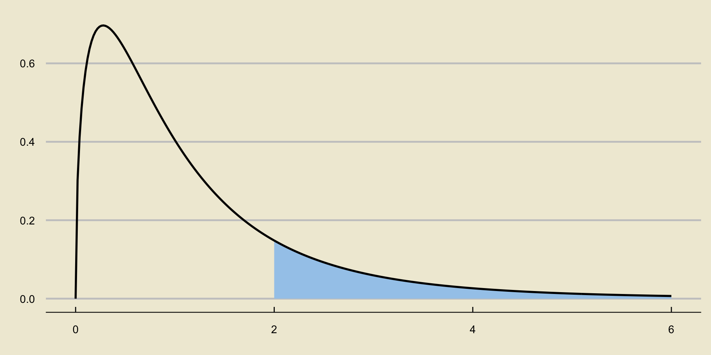

A B C
1 1.765793252 1.0969903 0.8893372313
2 1.457639487 0.2870172 1.673980678
3 0.3272998539 0.6808363 1.251111092
4 1.095808075 1.2379006 0.9022573626
5 1.410667987 0.9922533 0.7675894536
6 0.7399572196 0.8899447 1.117615437
7 1.232755793 0.9316065 0.3737125741
8 1.154274263 1.3892834 1.67516293
9 1.102145715 1.3327322 1.296435132
10 1.012699895 0.7350924 1.607457771
11 1.316513095 1.1671763 0.816422448
12 1.701518687 0.8616771 1.45467294
13 0.6174671647 2.0117302 1.379557127
14 1.614137039 0.7542573 0.3801190768
15 1.214315065 0.9248685 1.137032315
16 1.322568806 0.9104472 1.211800026
17 0.5316988941 0.8743895 0.8112870512
18 1.167568439 1.1064417 0.9079229895
19 1.842268501 1.1592197 1.266283383
20 0.5600975571 0.4025717 1.052936953
21 0.1111358597 0.8207547 0.6178776414
22 0.2283138521 0.5218210 1.336153889
23 1.233035082 1.5444821 1.172517814
24 2.292483665 2.0361300 1.182130396
25 1.661845627 1.6032929 1.113093457
26 1.936311107 1.1884932 1.272059779
27 1.149574608 1.4590064 0.9412990966
28 1.798998189 1.1167241 0.6817587653
29 0.964376006 1.7126866 0.7361788226
30 1.406602092 1.3171558 1.567508811
31 0.9663414057 0.9580213 0.1620266063
32 0.8253454929 0.5981795 1.313243321
33 1.166354148 0.7940150 0.4209655028
34 0.8619289925 1.1755322 0.3460173367
35 1.75423654 0.5596656 0.6170441472
36 1.19750664 0.9612827 0.9541098688
37 1.300104994 1.5859705 1.398728351
38 0.9311838315 1.0617239 0.305719329
39 1.728236132 1.8441543 1.823333996
40 0.734015249 1.6288662 1.593675665
41 1.430115776 0.9349482 1.010341883
42 0.9245640543 0.5062758 0.9393893861
43 0.6302833201 1.0307835 0.6409104121
44 0.8553313916 0.8576851 1.334618267
45 0.6977044289 1.2011012 1.100960662
46 0.9936511806 1.6957632 1.705428937
47 0.930429877 0.6007584 0.7612029733
48 1.256084968 0.8945088 1.316574767
49 1.382576335 1.1829400 1.053627858
50 1.026289871 1.5039893 0.6888426861
51 1.087047332 1.2542858 1.926036819
52 1.244547102 1.2157191 1.195822426
53 0.8300604643 1.5878198 1.349114526
54 1.45408001 1.2474061 0.5891445312
55 1.521112369 0.9551983 0.7448206699
56 1.201790399 1.0729141 1.1078628
57 2.297351832 0.7671714 0.8069951795
58 1.558729469 1.2686659 1.340910022
59 1.043863764 1.4270002 1.267264358
60 0.9189097764 -0.1418387 0.7179455626
61 0.983908872 1.5372595 1.156821193
62 0.8491355502 1.0273917 1.07181121
63 1.664392577 1.2343554 0.9961661192
64 0.7510949848 1.3149496 0.553034481
65 1.059438908 0.1319587 0.6940211732
66 0.8353519595 0.5716283 1.164702828
67 1.623091428 0.9167595 1.526293084
68 0.3907219854 0.7334437 0.6334109797
69 0.9187504084 1.1596691 1.617731702
70 1.039047154 0.8440360 1.15219132
71 1.259678211 0.3655715 0.4985811837
72 1.330451451 1.2949189 1.215525468
73 0.9921050538 1.4900517 1.468598686
74 1.594536229 1.2757410 1.188977611
75 1.257376889 0.7648802 2.113607293
76 2.333825528 0.9456562 1.208900453
77 0.3458392564 1.2693712 1.471653814
78 1.410300332 1.2912796 1.074960214
79 0.5774337312 1.4527445 1.511033358
80 0.7009955912 0.9322296 -0.008007406026
81 2.092542296 0.4816478 0.6841148682
82 1.972407074 0.7784213 0.9060748612
83 0.1719072597 1.2635539 1.296767106
84 0.9886131504 1.3475898 1.154749047
85 1.067076076 1.9400199 1.558352183
86 0.03414394576 1.0968726 1.23062258
87 1.075584744 1.1478458 1.163298305
88 1.296670609 0.9790805 1.004720958
89 1.208632573 0.8877082 1.143756914
90 0.1028031151 1.3627101 1.443280618
91 1.653854117 1.1913910 1.409884981
92 1.222271988 0.9670882 1.465768561
93 1.069043985 0.6181210 0.9620196655
94 0.7230535196 1.0007721 0.7572245096
95 1.455979508 0.8936071 0.8578699627
96 1.559134576 1.5520695 1.227264384
97 0.8589534306 1.4288504 1.795155782
98 1.144793806 0.6410757 1.17770267
99 1.513499311 1.5168673 1.288251183
100 0.12274394 0.8212093 0.323627882
101 NA 1.1032550 NA
102 NA 1.5310975 NA
103 NA 0.6400988 NA
104 NA 1.1141597 NA
105 NA 0.5978099 NA
106 NA 0.2734801 NA
107 NA 1.4446391 NA
108 NA 1.0612909 NA
109 NA 0.7210530 NA
110 NA 0.4153793 NAPSTAT 5A: Lecture 19
Analysis of Variance
Mallory Wang
2024-07-17
Leadup
Consider the following situation: a new drug claims to significantly lower systolic blood pressure.
To ensure these claims are validated, a clinical trial collects several volunteers and groups them into four groups: a control group, and three groups which each are administered a different dosage of the drug.
If the drug is truly ineffective, we would imagine the average systolic blood pressure of each group to be fairly similar to the average systolic blood pressures of the other groups.
In other words, given \(k\) groups, each with some population mean \(\mu_i\) (for \(i = 1, 2, \cdots, k\)), we wish to determine whether or not all of the \(\mu_i\)’s are the same.
ANOVA
This is the basic setup of Analysis of Variance (often abbreviated as ANOVA).
Given \(k\) groups, each with mean \(\mu_i\), we wish to test the null hypothesis that all group means are equal (i.e. \(H_0: \ \mu_1 = \mu_2 = \cdots = \mu_k\)) against the alternative that at least one of the group means differs significantly from the others.
CAUTION
Note the alternative hypothesis!
- It is NOT correct to write the alternative as \(H_A: \ \mu_1 \neq \mu_2 \neq \cdots \neq \mu_k\).
ANOVA
Here is the general idea.
Observations within each group will have some amount of variability (by virtue of being random observations).
However, the sample means (of the groups) themselves will also have some variability (again, due to the fact that sample means are random).
The question ANOVA seeks to answer is: is the variability between sample means greater than what we would expect due to chance alone?
- If so, we may have reason to believe that at least one of the group means differs significantly from the others; i.e. we would have evidence to reject the null.
ANOVA
Alright, let’s see if we can make things a little more concrete.
Suppose we have some measure of variability between sample means; perhaps we could call this \(\mathrm{MS}_{\mathrm{G}}\) (for mean-squared between groups).
Suppose we also have some measure of variability within each group (i.e. variability due to chance); perhaps we could call this \(\mathrm{MS}_{\mathrm{E}}\) can be thought of as a measure of variability within groups; i.e. as a sort of variance due to error/randomness.
Then, the ratio \[ F = \frac{\mathrm{MS}_\mathrm{G}}{\mathrm{MS}_{\mathrm{E}}} \] could be used as a test statistic.
ANOVA
Why would this be a good test statistic?
Well, we previously stated that we would reject the null (that all group means are the same) in favor of the alternative when the variability across groups is much larger than the variability due to chance.
Another way to say “the variability across groups is much larger than the variability due to chance” is to say that \(\mathrm{MS}_{\mathrm{G}}\) is much larger than \(\mathrm{MS}_{\mathrm{E}}\).
When this is true, \(F\) will be much larger than 1.
Hence, we would reject \(H_0\) for large values of \(F\).
So, this quantity (which we call the F-statistic) is a good test statistic for our test!
ANOVA
Alright, so how would we compute this statistic mathematically?
- In other words, what are good formulas for \(\mathrm{MS}_{\mathrm{G}}\) and \(\mathrm{MS}_{\mathrm{E}}\)?
To answer this, let’s establish some notation.
Recall that we have \(k\) groups; our assumption is that we have some set of observations from each group.
Let’s use the notation \(X_{ij}\) to mean the
ith observation from thejth group.For instance, \(X_{2, 4}\) would denote the second observation from the fourth group.
Since we have \(k\) groups, the index \(j\) is allowed to take values from \(\{1, 2, \cdots, k\}\).
Let’s also assume that we have \(n_k\) observations from group \(k\), so that \(i\) takes values from \(\{1, 2, \cdots, n_k\}\) for the different values of \(k\).
The Data

The Data: Example

- Here we have \(k = 3\) groups, with \(n_1 = 5\) observations from group 1, \(n_2 = 3\) observations from group 2, and \(n_3 = 4\) observations from group 3.
MSG
Let’s start with MSG, our quantity that is supposed to measure variability between group means.
We start by computing the means of our \(k\) sets of observations. In other words, we compute \[ \overline{X}_j = \frac{1}{n_j} \sum_{i=1}^{n} X_{ij} \] for each \(j = 1, 2, \cdots, k\).
Next, we compute the grand mean, which is simply the mean of all observations: \[ \overline{X} = \frac{1}{n} \sum_{j = 1}^{k} \sum_{i=1}^{n_j} X_{ij}; \quad n = \sum_{j=1}^{k} n_j \]
MSG
- Then, we compute the sum of squares between groups \[ \mathrm{SS}_{\mathrm{G}} = \sum_{j = 1}^{k} n_j (\overline{X}_j - \overline{X})^2 \] and obtain our quantity for MSG by dividing this by \(k - 1\): \[ \mathrm{MS}_{\mathrm{G}} = \frac{1}{k - 1} \cdot \mathrm{SS}_{\mathrm{G}} \]
MSE
Now, let’s discuss MSE, our quantity that is supposed to measure variability due to chance/within each group.
There are two main ways statisticians go about finding this quantity.
First, we compute the sum of squares total \[ \mathrm{SS}_{\mathrm{T}} = \sum_{j=1}^{k} \sum_{i=1}^{n_j} (X_{ij} - \overline{X})^2 \]
Then we compute the sum of squared errors \[ \mathrm{SS}_{\mathrm{E}} = \mathrm{SS}_{\mathrm{T}} - \mathrm{SS}_{\mathrm{G}} \]
And finally we divide by \(n - k\) to obtain MSE: \[ \mathrm{MS}_{\mathrm{E}} = \frac{1}{n - k} (\mathrm{SS}_{\mathrm{E}}) \]
What We Have So Far
Let’s take stock of what we have so far.
Our hypotheses are \[ \left[ \begin{array}{rl} H_0: & \mu_1 = \mu_2 = \cdots = \mu_k \\ H_A: & \text{at least one of the group means is different} \end{array} \right. \]
Our test statistic is \[ F = \frac{\mathrm{MS}_\mathrm{G}}{\mathrm{MS}_{\mathrm{E}}} \]
Our test takes the form \[ \texttt{decision}(\mathrm{F}) = \begin{cases} \texttt{reject } H_0 & \text{if } F > c \\ \texttt{fail to reject } H_0 & \text{otherwise}\\ \end{cases} \]
What’s Left?
So, what’s left?
- That’s right; the critical value \(c\).
Just as we did before, we construct our test to control for Type I errors.
That is, given a significance level \(\alpha\), we select the value of \(c\) that ensures \[ \mathbb{P}_{H_0}(F > c) = \alpha \]
This requires knowledge about the sampling distribution of \(F\)!
It turns out that, if we assume observations within each group are normally distributed (which ends up being a very crucial assumption), the statistic \(F\) follows what is known as the F-distribution.
As such, the critical value of our test is the appropriate percentile of the F-distribution.
The F-Distribution
The F-distribution is quite different from the distributions we have encountered thus far.
For one thing, it admits only nonnegative values in its state space (i.e. it has state space \([0, \infty)\)).
Additionally, it takes two parameters, referred to as the numerator degrees of freedom and the denominator degrees of freedom (sometimes abbreviated as just “degree of freedom 1” and “degree of freedom 2”.)
To notate the fact that a random variable \(X\) follows the F-distribution with degrees of freedom
d1andd2, respectively, we write \[ X \sim F_{\texttt{d1}, \ \texttt{d2}} \]
The F-Distribution
The Test Statistic
Recall that our test statistic in ANOVA is \[ F = \frac{\mathrm{MS}_\mathrm{G}}{\mathrm{MS}_{\mathrm{E}}} \]
As mentioned previously, if we assume normality within groups, then, under the null, \(F\) follows the F-distribution with \(k - 1\) and \(n - k\) degrees of freedom, respectively, where \(k\) is the number of groups and \(n\) is the combined number of observations: \[ F = \frac{\mathrm{MS}_\mathrm{G}}{\mathrm{MS}_{\mathrm{E}}} \stackrel{H_0}{\sim} F_{k - 1, \ n - k} \]
Since we reject only for large values of \(F\), our p-values are always computed as upper-tail probabilities:
p-Values in ANOVA
ANOVA Tables
As mentioned previously, computing \(\mathrm{MS}_{\mathrm{G}}\) and \(\mathrm{MS}_{\mathrm{E}}\) is not particularly challenging, but it can be quite tedious.
- The process can be somewhat illuminating, though, so I have put a question on this week’s homework walking you through how to perform an ANOVA by hand.
As such, computer software is usually utilized to carry out an ANOVA.
Often times, the results of such a computer-generated ANOVA are displayed in what is known as an ANOVA Table.
I find ANOVA tables to be best described by way of an example.
Example
Reference Example 1
A state official would like to determine whether or not the average fluoride levels in the water supplies across three cities, called A, B, and C, are the same.
To that end, they took a sample of 100 fluoride measurements from city A, 110 from city B, and 100 from city C.
- After running an ANOVA in a computer software, the following output was produced:
| DF | Sum Sq | Mean Sq | F value | Pr(>F) | |
|---|---|---|---|---|---|
| Between Groups | 2 | 0.541799 | 0.2709 | 1.30682497808 | 0.272179497817 |
| Residuals | 307 | 63.6399 | 0.207296 |
- Let’s go through this table in more detail.
Interpreting an ANOVA Table
| DF | Sum Sq | Mean Sq | F value | Pr(>F) | |
|---|---|---|---|---|---|
| Between Groups | 2 | 0.343981 | 0.171991 | 0.927001041587 | 0.396843557892 |
| Residuals | 307 | 56.9591 | 0.185534 |
The DF column gives the degrees of freedom of the resulting F-statistic.
- Recall that these are meant to be \(k - 1\) and \(n - k\) respectively.
- \(k\) is the number of groups (i.e. 3, in this example), hence the numerator d.f. of 2.
- \(n\) is the total number of observations (i.e. 100 + 110 + 100 = 310, in this example), hence the denominator d.f. of 307 (310 - 3 = 307).
The rownames (“Between Groups” and “Residuals”) refer to whether the specified entry is in relation to a between group calculation or a within group calculation.
- The reason for calling the second row “Residuals” instead of “Within Group” will become clear next week, after we talk about Regression.
Interpreting an ANOVA Table
| DF | Sum Sq | Mean Sq | F value | Pr(>F) | |
|---|---|---|---|---|---|
| Between Groups | 2 | 0.343981 | 0.171991 | 0.927001041587 | 0.396843557892 |
| Residuals | 307 | 56.9591 | 0.185534 |
The Sum Sq column is precisely the sum of squares between groups and the sum of squared errors, SSG and SSE respectively.
The Mean Sq entries are found by dividing the corresponding Sum Sq entry by the corresponding degree of freedom.
- That is: 0.171991 = 0.343981 / 2
- And: 0.185534 = 56.9591 / 307
Finally, the F value is simply the ration of the two Mean Sq values, and represents the value of our test statistic.
- The Pr(>F) is just our p-value.
Analyzing the Data
Maybe that was a little too opaque.
If you’d like, there is the actual data:
Analyzing the Data
Whoops- maybe that’s too detailed.
Any ideas on how we might be able to get a better sense of the data that doesn’t involve looking at all those numbers?
Maybe… something we learned in Week 1?

Checking Assumptions
Finally, I should mention: every good statistician and data scientists starts by checking assumptions.
One of the key assumptions in ANOVA is that observations within each group are normally distributed.
How can we check that?
- That’s right: QQ-plots!
In the upcoming lab, you’ll begin to start talking about how to start statistical analyses.
- Specifically, you will learn about something called Exploratory Data Analysis (EDA), part of which entails producing any diagnostic tools you may need to produce in order to ensure assumptions are being satisfied!
QQ-Plots for the Fluoride Dataset